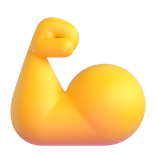
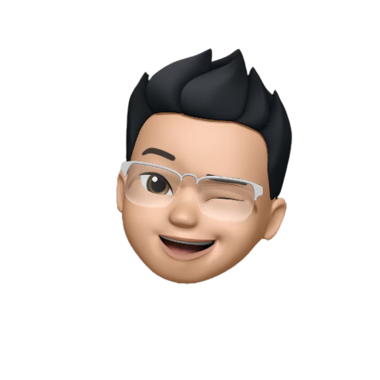

@laz.creator01 / 08
Твойпромптслабый.Воткаксделатьегосильным


листай



Пишу напиши пост про кофе

Получаю текст ни о чём
Напиши пост про кофе.
Ты бариста с 10 годами опыта. Напиши пост для кофейни в Instagram на 5 строк, тон дружеский, в конце вопрос подписчикам.
Сделай резюме текста.
Сделай резюме для руководителя в 5 пунктах. Каждый пункт до 10 слов.
Кем нейросеть должна быть: бариста, юрист, редактор.
Ты бариста с 10 годами опыта

Сколько строк, пунктов или слов нужно на выходе.
5 строк, в конце вопрос

Как звучать: дружески, строго, с юмором.
Тон дружеский, без канцелярита